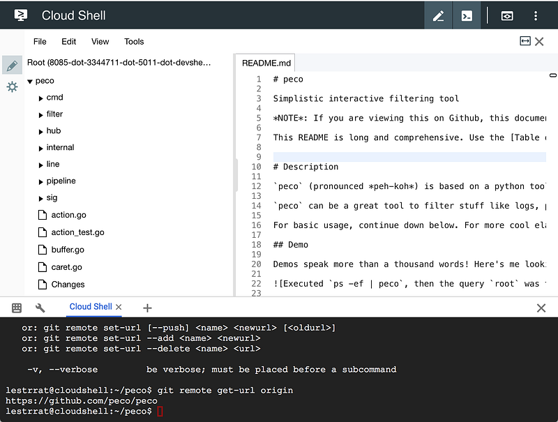

Open Your Repository In Google Cloud Shell
Open Your Repository In Google Cloud Shell
When I found that this was possible, I mumbled to myself; “Oh. My. God.”
So Cloud Shell is a Google’s version of “Open a command line prompt on your browser” tool
Google Cloud Shell is a free admin machine with browser-based command-line access for managing your infrastructure and…cloud.google.com
If you have deployed applications on GCP, you probably saw links in the Console saying “Run this in Cloud Shell”. I saw this many times, too, and found them rather amusing, but not so useful other than to learn how to use the gcloud tool without having to configure it in my own machine.
Then as I was perusing, I found a link to Cloud Shell with a Git repo… oh. Lo and behold, you can clone an arbitrary (public) git repository and also open a file in an editor… all on the browser!
For example, you can open the following window by clicking on this link: https://console.cloud.google.com/cloudshell/open?git_repo=https://github.com/peco/peco&page=editor&open_in_editor=README.md

This is my peco repository. Holy moly. You have an editor open, and you even have access to shell so you can write in the editor and do other stuff from the shell.
Now, for a lot of users I’m sure this is something they can easily bypass by cloning the repository on their machines, but if you just want to, for example, have somebody go through a tutorial, this is rather handy in that you can get anybody drop into a VM with standard features.
For other possible options on this feature, look under this page:
To provide a link to open a sample Git repository in Cloud Shell, you would need to use Markdown such as the following…cloud.google.com
I think this is just amazing. And I wanted to share my excitement. That’s all :)